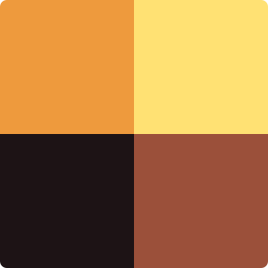

Пошук... (Alt + /)
Вступ
Випуски
Ціль 0.21.0
Архів
Цілі
Ціль 0.21.0
Ціль 0.21.0
принесла деякі зміни.
Завантажити
Назва
Файли
Ціль для Linux
tsil-0.21.0-x86_64-linux-gnu.zip
Зміни
конвертація комірки в позитивне і навпаки
Відступ